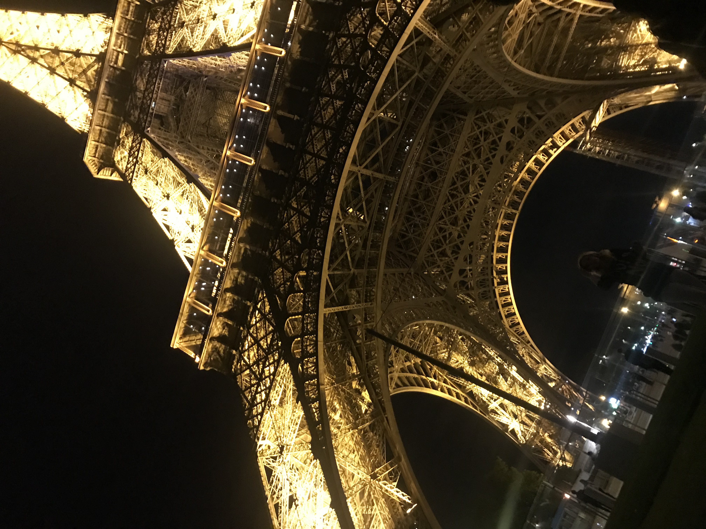
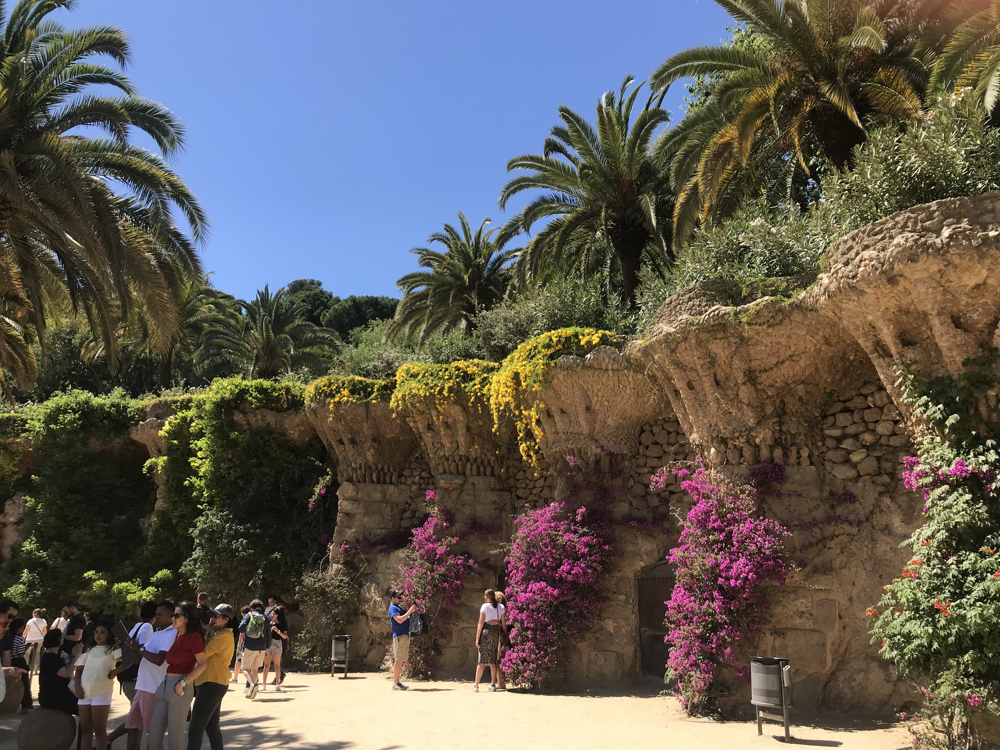
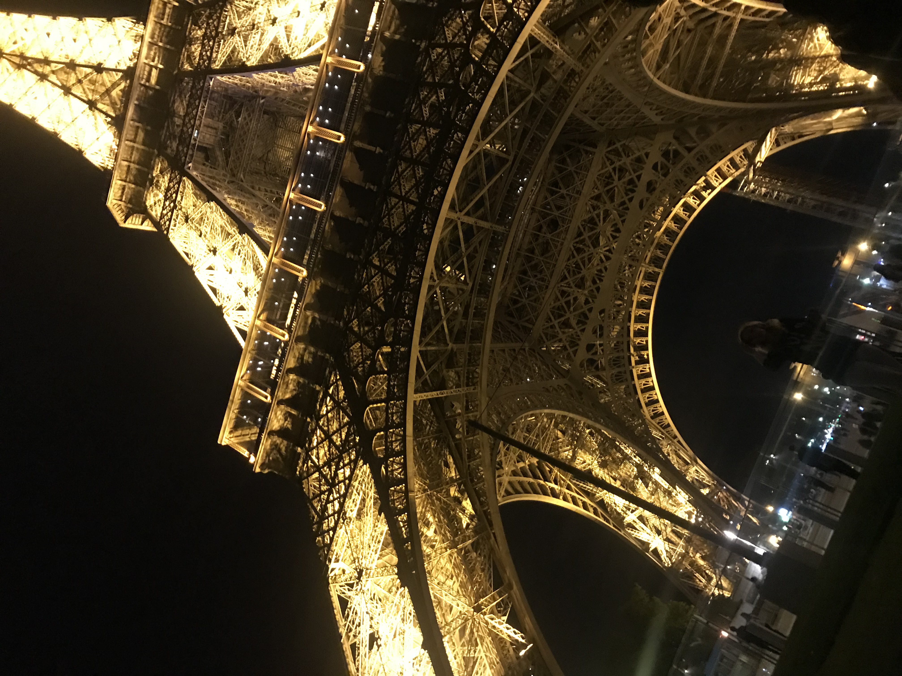
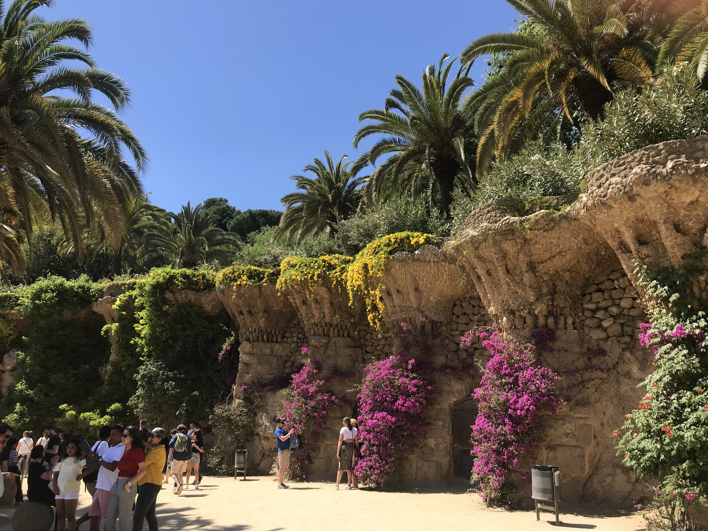
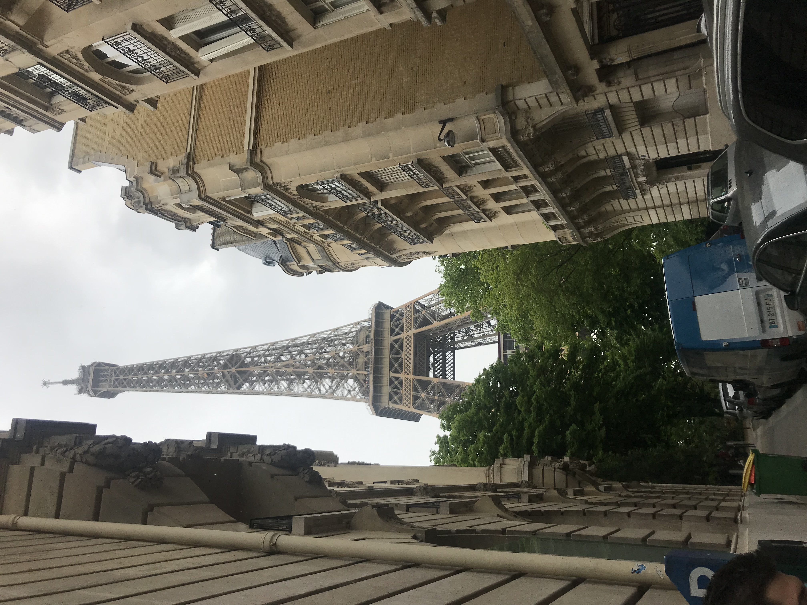
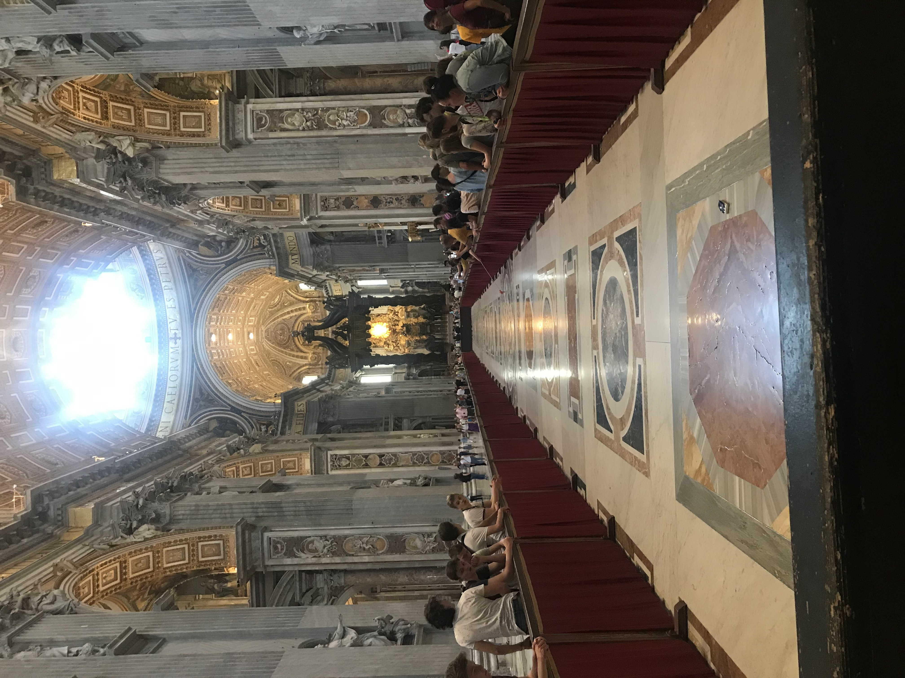
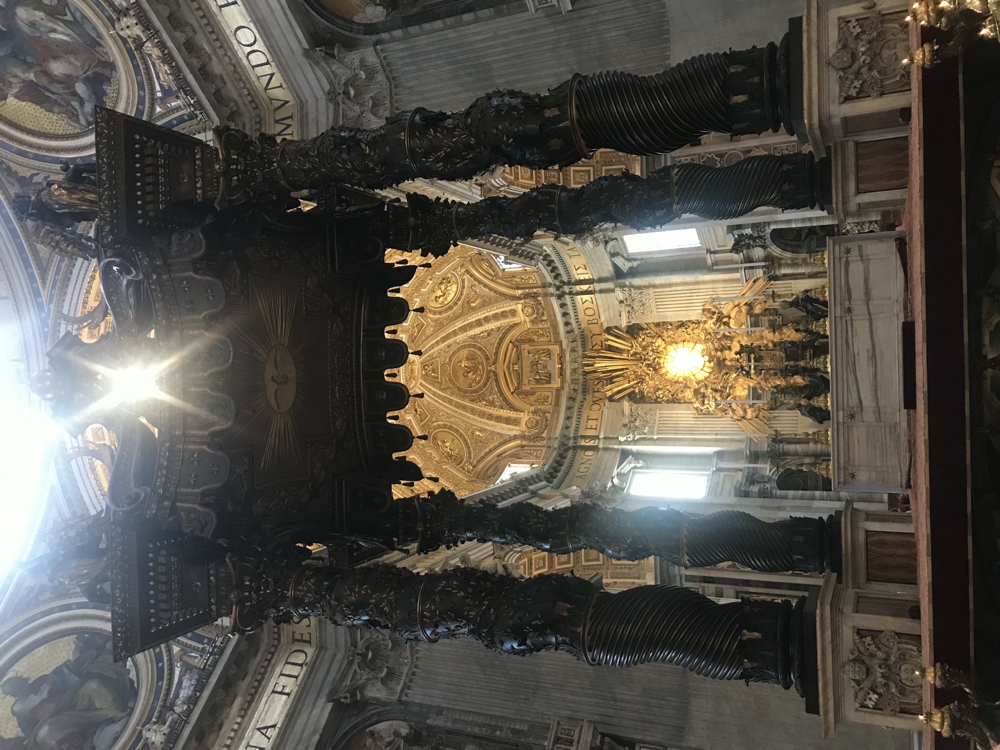

Hi, I'm Olivia Ruffino!

Some of my favorite pictures
 



PARIS, FRANCE
May 2019
I am so grateful to say that this was taken my second time I went to Paris. I love the city so much! The firt time I was able to go to France was in high school for my French club. I have always loved the language, culture, and fashion this city has to offer for as long as I can remember. I pray that I will be able to return to this beautiful city one day.
BARCELONA, SPAIN

This picture was taken infront of the Sagrada Familia. The most well-known church in all of Spain. Is gothic articture was stunning in person. A mass was being held at the time that I was visiting, so I unforunately was not able to go inside. I was able to visit Madrid, but Barcelonas beauty was more fasinating than Madrid. Spain offered tapas, Cava, and architecture that was like no other. I hope I can go back and visit Barcelonas beauty.
ROME, ITALY
 The Eternal City - ROME. I only spent 3 days in Rome and they were well spent. I was able to meet my cousins who lived in Rome, taste the most amazing pastas/pizzas, and explored all of its wonders. Rome is so close to my heart because it's were most of my family is from. Well, mostly Sicily but I was able to explore like the Romans do! The pictures above were taken inside the Vatican Church. Paris being my first love; Rome is 2nd. I will return back and explore all of Italy with my cousins and go visit the beautiful crystal blue waters.